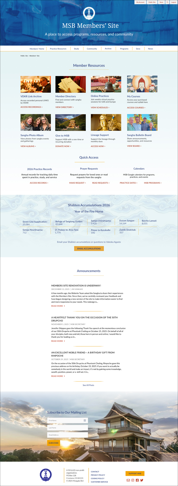
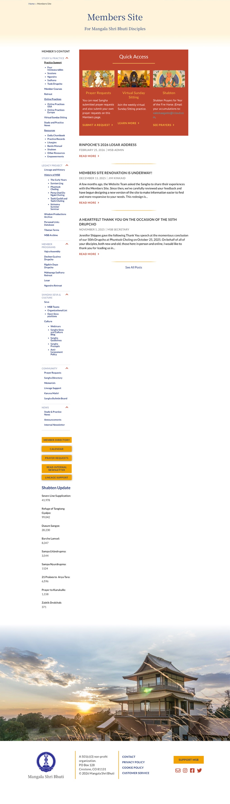

Case Study · 04 · Nonprofit
Members couldn't find resources they needed. I surveyed 53 members, reorganized the information architecture from a bloated sidebar to a focused mega menu, and surfaced high-priority resources on the homepage. The site is now in production.

Fig 01. MSB members site homepage, post-launch
01
The Challenge
The members site had six collapsing sidebar sections with dozens of links. Members reported difficulty finding resources and rarely used the site. Survey data showed 63.5% found navigation manageable but required effort. The search function was the top complaint. Course materials were buried. Basic tasks like paying dues were hard to locate.
Yet 84.9% visited for Study and Practice materials. The problem wasn't engagement. It was structure.
02
Research & Discovery
I conducted a member survey reaching 522 people with a 10.1% response rate: 53 members. The data was consistent. Study materials drove visits (84.9%), followed by Member Programs (75.5%) and Member Directory (45.3%). When asked what frustrated them, members cited navigation, search failures, and buried content.
When asked for improvements, navigation and table of contents appeared repeatedly. Members wanted faster access to the resources they already valued.
Finding Information Experience
Fig 02. How members rated their ability to find information on the site
Top Frustrations by Members
Fig 03. Primary frustrations reported in the member survey
The survey asked members directly what brought them to the site. Three categories accounted for the majority of visits, and none were easy to find in the existing sidebar structure.
84.9%
The clear majority of visits were for practice support: liturgies, instructions, online sessions, and course materials. These were buried three levels deep in collapsing sidebar menus.
75.5%
Program information, registration, and schedules were the second most-visited category. Members had to know exactly where to look. Discoverability was near zero for anyone new to the site.
45.3%
Nearly half of members visited for the directory, one of the most consistently hard-to-find pages. It appeared in a collapsed sidebar section with no homepage shortcut.
03
Design Strategy
Rather than redesign the entire site, I focused on navigation. A horizontal mega menu at the top would surface high-traffic resources on the homepage while maintaining comprehensive navigation for deeper content.
The homepage got two jobs: quick access to the most-used pages (Member Directory, Calendar, Courses, Liturgies, Prayer Requests, Sangha Bulletin Board) and current updates. The mega menu handled the remaining 35 pages, organized by member intent: Programs, Courses, Practice Resources, Archives, Community, Seva, News.
AI-Assisted Research Synthesis
Claude synthesized qualitative survey responses, revealing patterns in minutes rather than hours of manual review. The synthesis surfaced the distinction between navigation frustration (can't find the menu item) and search frustration (can't find the content once there), which shaped the two-part solution of mega menu plus homepage shortcuts.
Constraint
The WordPress theme was staying. The approach had to work within the existing infrastructure. That constraint focused the solution: information architecture and navigation, not a new design system.
Homepage
Surface the highest-traffic destinations directly on the homepage, no navigation required. Directory, Calendar, Courses, Liturgies, Prayer Requests, Bulletin Board. Everything else lives in the mega menu.
Mega Menu
Organize by member intent rather than site structure. Programs, Courses, Practice Resources, Archives, Community, Seva, News. Each category maps to a real reason someone visits the site.
04
Design Execution
I started with wireframes in Google Slides. The first version combined Study and Practice into one dropdown. Stakeholders flagged it as cramped. I split it into Courses and Practice Resources. Clearer immediately.
Each mega menu section got intentional grouping. Courses distinguished between Practice Courses, Study Courses, and Foundational offerings. Practice Resources held daily practice, online sessions, and ritual materials. Each section felt scannable.
High-fidelity mockups in Figma showed the full page and each mega menu section. Button labels followed a consistent pattern: VIEW for browsing, ACCESS for gated content, DONATE for transactions. Copy was tightened throughout.
Version 01
The first pass grouped all study and practice content into a single mega menu column. Stakeholders reviewed it and flagged crowding: too many items, no clear hierarchy within the section.
Revision
Separating them made the distinction explicit: Courses for structured learning, Practice Resources for daily and ritual materials. The change was immediately legible. I revised rather than defended.
Stakeholder Challenge
The team initially suggested running two menus: the original sidebar alongside the new mega menu. Survey data explained why: breaking navigation conventions would split member attention and increase confusion. Eventually they agreed.
Before

After
Fig 04. Homepage before and after: sidebar navigation replaced with quick-access cards and mega menu
Fig 05. Mega menu — 7 categories organized by member intent. Click arrows to explore each dropdown.
05
Outcomes
No major engineering work was required. The mega menu integrated into the existing WordPress theme. The new homepage made frequently-needed pages immediately visible. The information architecture created a scalable pattern for future additions.
Reflection
Using AI changed my process. Claude synthesized qualitative survey data in minutes, freeing time for strategy over data processing. That shift, from analysis to decision-making, was where the project moved fastest.
Stakeholder management required backing decisions with evidence. When the team proposed a double-menu system, survey data provided the argument: members were already struggling with one navigation structure. Adding a second would increase confusion, not reduce it. Eventually they agreed.
The split of Practice into two sections came from feedback after the first pass showed crowding. Revising rather than defending that decision produced a cleaner result and built stakeholder trust for the rest of the project.
What I would do differently: test the mega menu prototype with actual members before finalizing. Stakeholder feedback was valuable, but user testing would have validated category names against actual mental models, and might have surfaced naming issues before production.